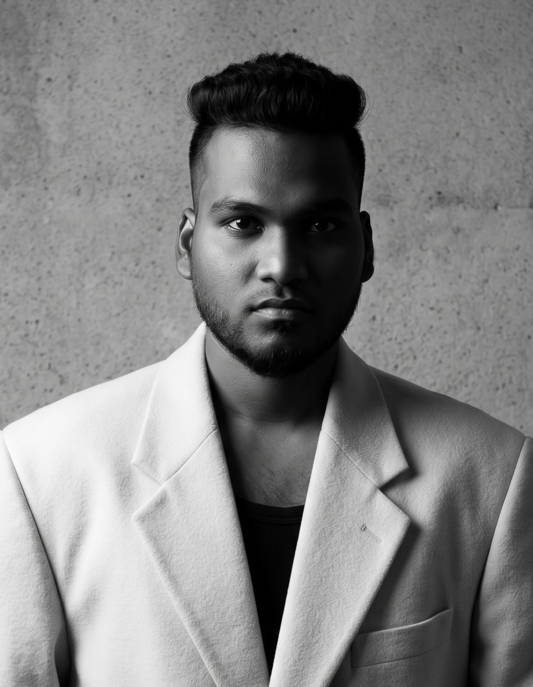
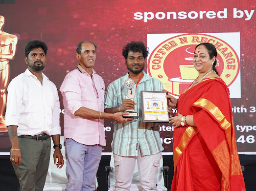
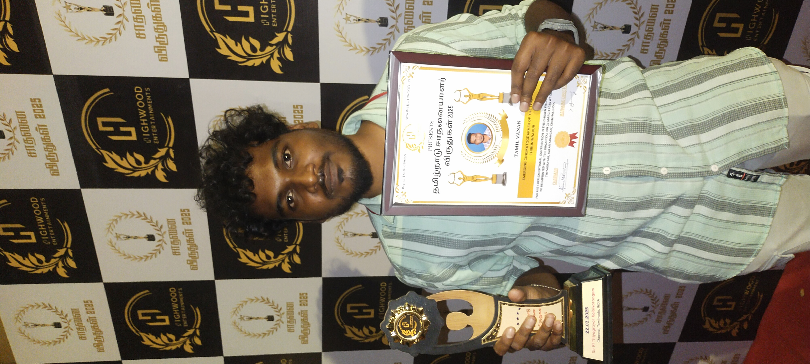
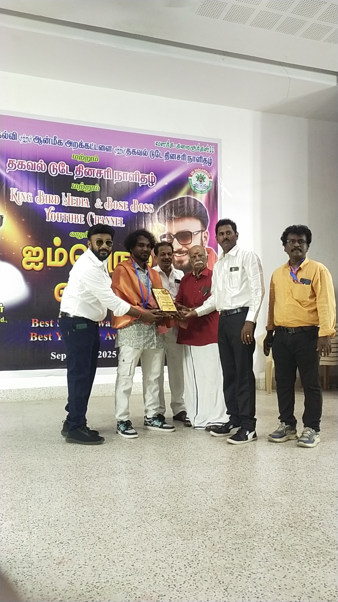
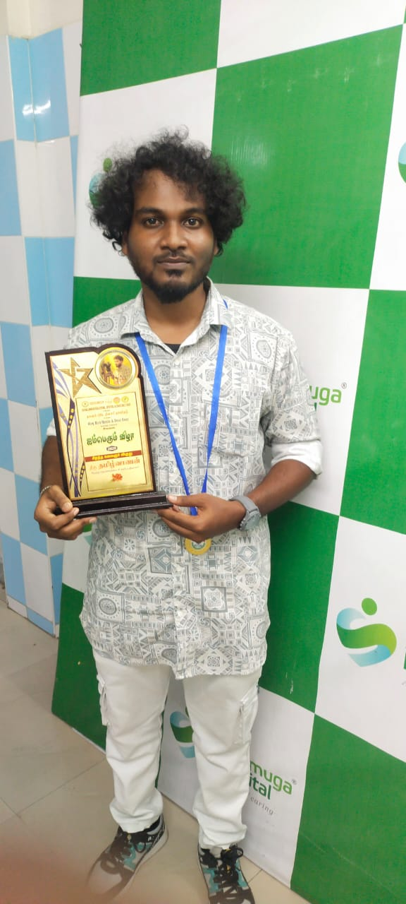

"From the first sound to the final frame — I make it happen."
A self-taught visual storyteller from Chennai — moving between sound, story, and light.
I started as an Audio Engineer in 2019, working on Tamil television through Pro Media MJR Lights and Sounds. When COVID shut down production in 2020, I pivoted into Assistant Direction — and never looked back.
By 2024 I had grown into Cinematography and Direction, while continuing freelance candid photography since 2019.
Alongside film work, I manage events — coordinating DJ performances and sound systems — and I run pyrotechnics for live stage shows.
I'm currently building Black Pulse, an open-source Android music player — bringing the same craft-driven approach to code.
Presented by actress Nalini and actor Vaiyapuri for outstanding work in Tamil television.


Recognition for cinematography work in Tamil television.


Pro Media MJR Lights and Sounds — worked across Vijay TV, Sun TV, Zee Thamizh and Puthiya Thalaimurai productions.
COVID lockdown shut down live production. Re-entered the industry through Assistant Direction when shoots resumed.
Raj TV Pongal special → Captain TV's Kolaru Kudumbam → Makkal TV's Punnagai Mannargal.
Stepped up to Associate Direction on Punnagai Mannargal, learning the full arc of production.
Leading the camera on Punnagai Mannargal, directing the music video கண்மணியே, and building Black Pulse.
Cinematographer · Associate Director · Assistant Director
Assistant Director
Assistant Director
Assistant Director
Kalakka Povathu Yaar S9 (Vijay TV) · Sun Singer S2 (Sun TV) · Thamizhan Viruthugal (Puthiya Thalaimurai TV) · Sa Re Ga Ma Pa Seniors S2 · Kudumba Viruthugal · Jill Jung Juk · (Zee Thamizh) ·
Chennai · Events, portraits, and on-set documentation.
A free and open-source music player for Android. Built with Kotlin, Jetpack Compose, and Material 3. ViMusic-inspired vertical rail, dynamic Material You colors, inline Settings navigation, and a custom updater.
For collaborations, freelance work, or just to talk film — reach out.